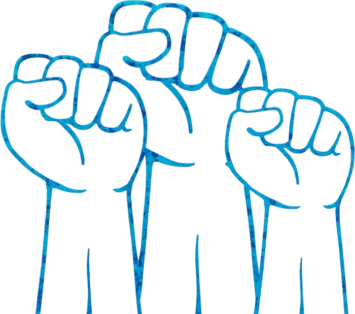

"If evil wins, even if you are dead, all players make a hand signal. If most match & the Demon's doesn't, good wins instead."
La Révolution sparks a silent revolt.
- The hand signal can be anything, as long as they match at the end of the game.
- If a Minions matches the hand signal, good still wins. The Demon's must match for Evil to win.
- La Révolution's ability activates even if they are dead. If they are drunk or poisoned, it does not activate.
- Half or more of the hand singnals must match. Outsider and Minion hand signals count along with Townsfolk.
- Hand signals must be clear and distinct.
- La Révolution's hand signal does not need to match as long as most still do.

If Evil would win the game, from an ability or game rules, ask for silence and declare that La Révolution is in play.
On a count of 3, all players may make a hand signal. Ensure that you can see all signals clearly and no players change their signal after the count.
If half or more singals are clearly the same, check the demons hand signal. If it is not the same, declare that the game is over and Good has won.
To ensure that the game is fair for all players, make sure that the hang signals are clearly legible and the same before declaring a good victory.

La Révolution tells a small group that the signal is a peace sign. Later, they show a peace sign to a player they believe is good from across the room. The game ends, and most players show a peace sign. Good wins.
La Révolution tells a player that the sign is a thumbs down. That player tells another player, who tells the Demon. Evil wins the game and most players show a thumbs down. The Demon also shows a thumbs down. Evil wins.
Evil wins with La Révolution in play. Some players show an ok sign, and the demon shows a closed fist. Most signs don't match, and evil wins.

- You don't need to talk to players to show them the sign of the revolution. A quick flash of the signal from across the room or right before night will communicate it just as well!
- You decide the signal of the revolution. Try to make it something obscure and not easily guessed like a sideways thumb.
- Your ability works just as well if you are alive or dead, so consider bluffing a powerful kill to waste a demon kill. Be wary of poison or drunkeness however, as that will cause your ability to not work.
- Try to bluff a fake signal when you think the Demon is watching. You might be to trick them into thinking they got lucky and saw the real signal!
- Try to bluff being Cloaked yourself! Play around claiming your character and be shy about sharing info. Good players might assume you are Cloaked!
- Is nobody acting like they've been Cloaked? They might have figured out what they are quickly! Look on the script for characters that could do that and watch the players that claim to be them.

"For life! For liberty! And for no more bedtime!!!"
Information
- Type:
- Townsfolk
- Creator:
- —
- Appears in:
- —
- Tags:
- Wincon, Public action, Saftey Net
Fan-made content for Blood on the Clocktower · Not affiliated with The Pandemonium Institute